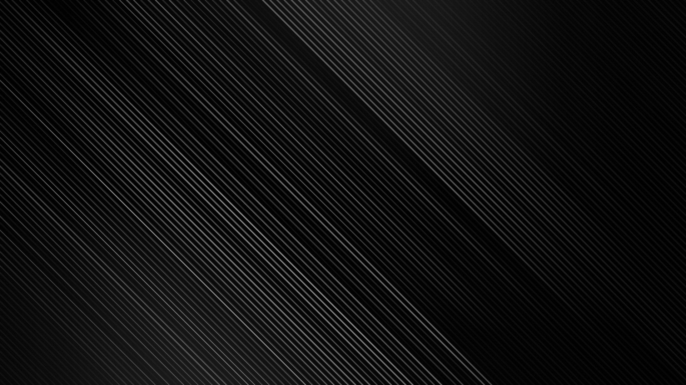
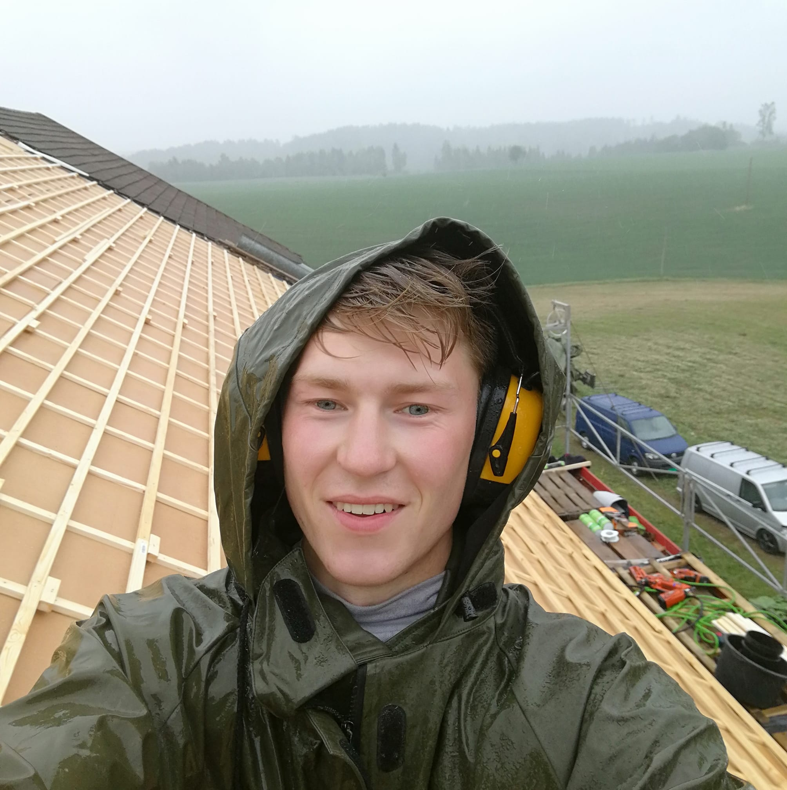
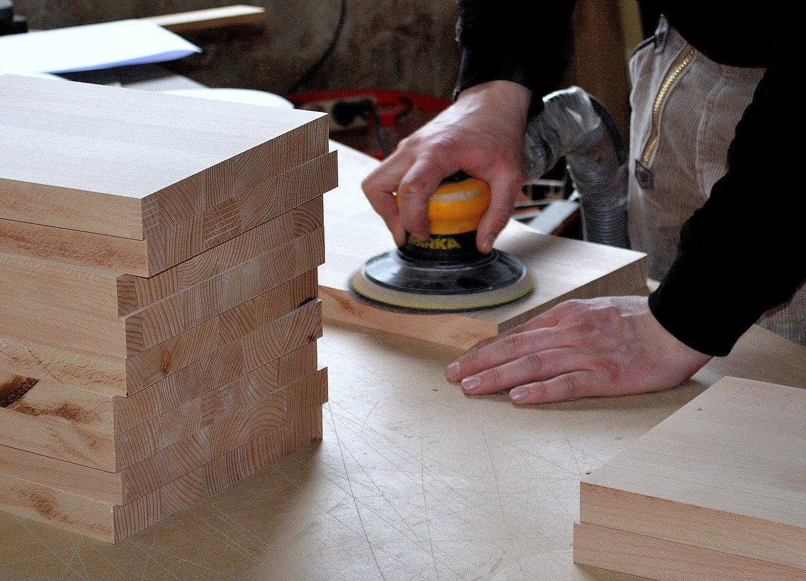

Er et tømmrer firma som skal starte opp i januar 2021.
Solem bygg utfører store og små prosjekter for privat personener i forskjellige aldere.
Kundegruppen varierer fra småbarnsfamilier til eldre par.
dagelig leder Rino solem har svennebrev som tømmrer og 10 års erfaring innenfor faget.
han har gode referanser på tidligere prosjekter han har utført for andre firmaer.
Dette er et enkeltmannsforetak
Nøkkelord: Moderne, trygg, presis, kreativ, personelig, "Dette får vi til, mentalitet".
Color
Fargene pallette mitt består av 3 farger. Fargene heter
Stormy-blue, Gray1 og Salsa-red. Jeg har valgt å kalle disse spreke fargene for
Gray1, Stormy blue og Salsa red
Første fargen er
Stormy blue den har også fått en lillebror som heter Baby blue
Jeg har valgt å lage en lysere nyanse av Stormy blue, slik at det er flere valg mulugheter
å leke seg med på nettsiden, kanskje det skal brukes til illustrasjoner, background osv.
Her har jeg laget 2 nye nyanser av fargen Gray1. Som jeg har valg å gi de fantastiske
navnene Gray2 og Gray3. Jeg vil bruke dissefargene nyansesne på nettsiden, slik at det blir litt
mer spill på nettsiden, slik at det ikke har blitt helt platt og kjedelig.
Gray1
Fontene jeg har valgt å bruke er av typen sans-serif font.
Vi er ute etter et moderne, stilfult og tildels minemalistisk design.
Derfor har vi gått for sans-serif fonter, disse type fontene er ofte lette å lese,
noe som er helt nødvendig på denne nettisen. Brukere av denne nettsiden er alt
enselige og småbarnsfamilier i 30 årene opp til eldre par.
De som bestiller tjenester igjenneom Solem bygg vil først og fremst finne nødvendig informasjon
så raskt så mulig. Derfor er det viktig at skriften ikke er for liten og text typen kan leses
av alle.
For heading har jeg valgt Raleway. Jeg valgt denne fonten
fordi den har et allsidig utrykk, når den er litt bolde så
virker fonten så vennelig og snill, men når den er thin så virker den litt mer klassisk og ryddig.
Under ser du exempel
h1. Font size 5rem w600.
h2. Font size 4rem w300.
h3. Font size 3rem w600.
h4. Font size 2.5rem w300.
For paragrafer har jeg valgt Open sans i regular weight.
Open sans fonten passer veldig godt med fonten Raleway som går til headingen.
Begge fontene er sans serif og gir derfor et moderne utrykk og er veldig lett leselig.
font størrelse er 1.5rem. tykkelse på bokstavene er 200. paragrafene skal være venste justert.
med en linjeavstand på 1.7, slik at det er lett for lesere å skille linjene fra hverandre.
Font fargen skal være hvit som standar
Jeg har valgt denne bakgrunden fordi den er svart/ mørk, det passer veldig
godt med farge palettet og kan gi et kick til desigen på nettsiden.
Standaren på denne nettisden vil i dark mode.

Img

Portrett bilde.
Portrett bilde i about section skal se ut som eksemplet over.
For å få til det må vi bruke bilde som har aspect ratio på 1:1,
Eksempel: høyde og bredde 500px × 500px, Eller 1500px × 1500px, altså likehøy som bred.
Ved å bruke aspect ratio til 1:1 blir det enklere å gjøre bildet om til en sirkel.
ved hjelp av boder-radius i CSS. Se CSS eksempel.
Bildene skal ha en minimums bredde på 300px og en max bredde på 700px.
Bilder som skal bli brukt i gallerier
for å hvise hva slags tjenester som blir utført, skal ha en aspect ratio på 4:3 eller Aspect ratio: 1.42
Se bilde som er under. Minimums bredde skal være på 300px og max bredde på 700px.
Aspect ratio på 4:3

Aspect ratio på 1.42
Landscape
bilder skal ha aspect ratio på 1:48. Slik at det vil dekke hele skjermen
om vi skulle ønske å bruke det som hero-img eller background.
Eksempel bilde str : 1728px × 1166.88px.
Disse bildene skal dekke 100% av skjermen.
Buttons og link
Her har jeg laget 3 buttons og en link.
Alle buttons/knapper skal ha en minimum bredde på 200px og hyde på 60px.
Fonten Raleway blir brukt på alle buttons.
Regular button er i fargen stormyblue og call to action button skal være
red salsa. Det er mulighet for at begge disse knappene vil være vedsiden av hverandre,
og da vil jeg at den salsa røde knappen skal være dominant, men samtidig så skal begge
knappene skille seg ut og dette er grunnen til atregular buttonen er i fargen stormyblue.